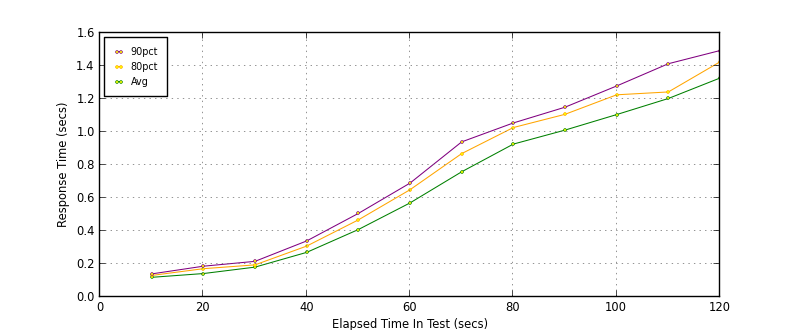
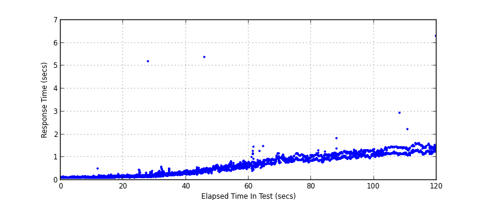
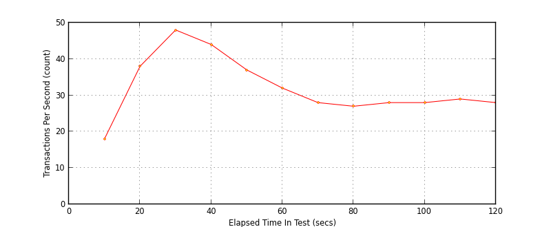

Performance Results Report
Summary
transactions: 3954
errors: 0
run time: 120 secs
rampup: 120 secs
test start: 2013-05-14 00:03:37
test finish: 2013-05-14 00:05:37
time-series interval: 10 secs
workload configuration:
| group name | threads | script name |
|---|
| user_group-1 | 40 | getTransactionLog.py |
All Transactions
Transaction Response Summary (secs)
| count | min | avg | 80pct | 90pct | 95pct | max | stdev |
|---|
| 3954 | 0.096 | 0.621 | 1.093 | 1.198 | 1.297 | 6.308 | 0.451 |
Interval Details (secs)
| interval | count | rate | min | avg | 80pct | 90pct | 95pct | max | stdev |
|---|
| 1 | 187 | 18.70 | 0.096 | 0.119 | 0.131 | 0.140 | 0.151 | 0.161 | 0.014 |
| 2 | 388 | 38.80 | 0.102 | 0.142 | 0.172 | 0.187 | 0.196 | 0.504 | 0.034 |
| 3 | 483 | 48.30 | 0.116 | 0.181 | 0.195 | 0.216 | 0.269 | 5.205 | 0.234 |
| 4 | 445 | 44.50 | 0.139 | 0.270 | 0.309 | 0.340 | 0.367 | 0.579 | 0.062 |
| 5 | 374 | 37.40 | 0.231 | 0.409 | 0.467 | 0.506 | 0.540 | 5.375 | 0.270 |
| 6 | 327 | 32.70 | 0.351 | 0.570 | 0.650 | 0.690 | 0.741 | 0.842 | 0.095 |
| 7 | 287 | 28.70 | 0.407 | 0.759 | 0.869 | 0.940 | 1.046 | 1.484 | 0.155 |
| 8 | 276 | 27.60 | 0.757 | 0.927 | 1.027 | 1.055 | 1.085 | 1.177 | 0.096 |
| 9 | 281 | 28.10 | 0.769 | 1.011 | 1.107 | 1.150 | 1.170 | 1.824 | 0.117 |
| 10 | 286 | 28.60 | 0.927 | 1.106 | 1.225 | 1.279 | 1.297 | 1.358 | 0.112 |
| 11 | 295 | 29.50 | 1.021 | 1.203 | 1.243 | 1.414 | 1.437 | 2.931 | 0.143 |
| 12 | 285 | 28.50 | 1.077 | 1.327 | 1.425 | 1.494 | 1.567 | 6.308 | 0.327 |
Graphs
Response Time: 10 sec time-series

Response Time: raw data (all points)

Throughput: 5 sec time-series
